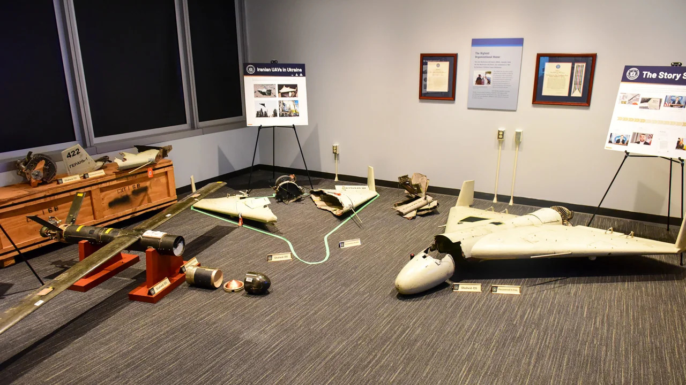
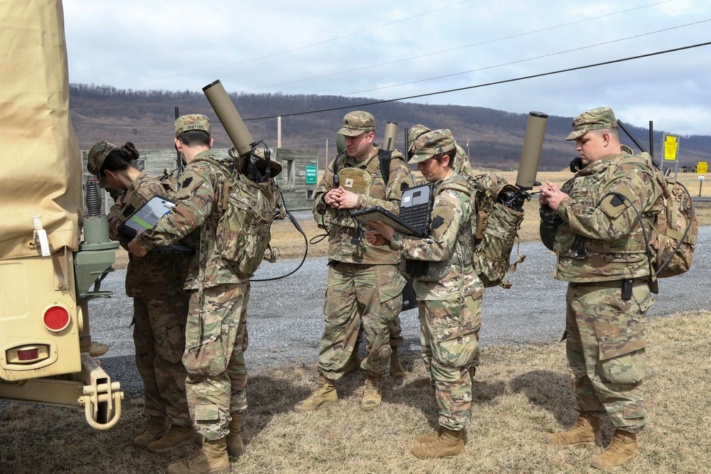
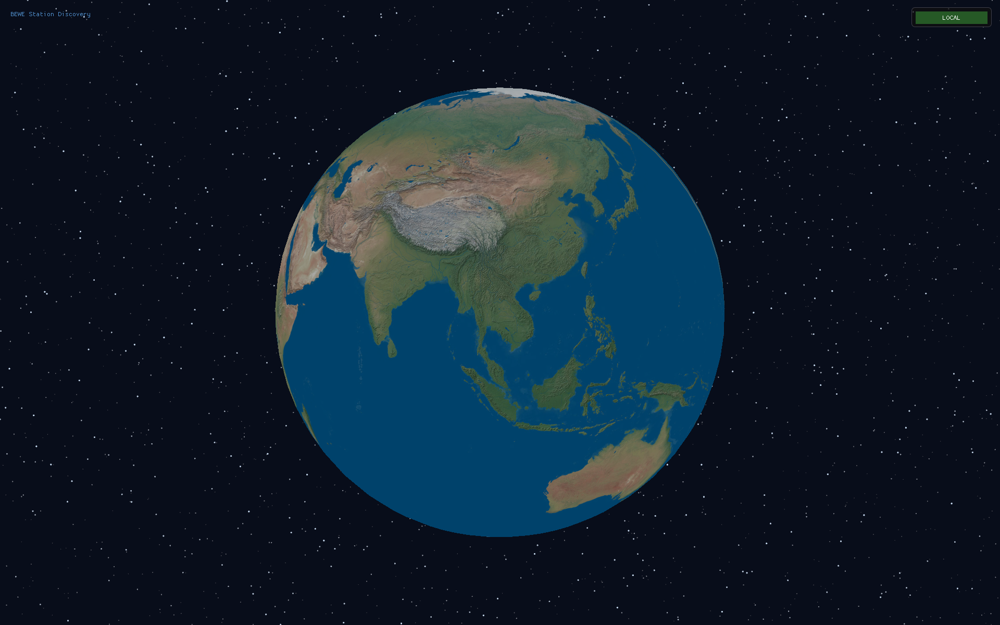
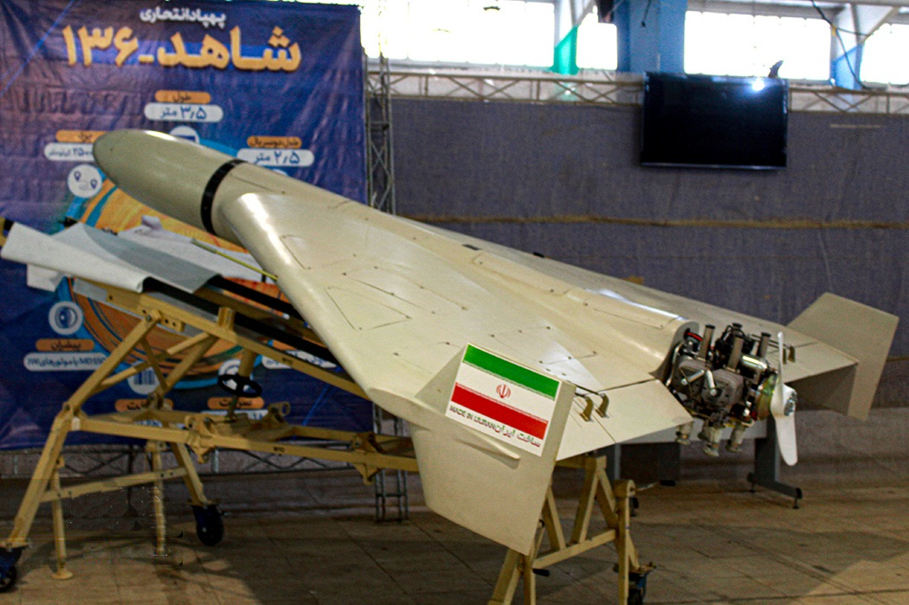
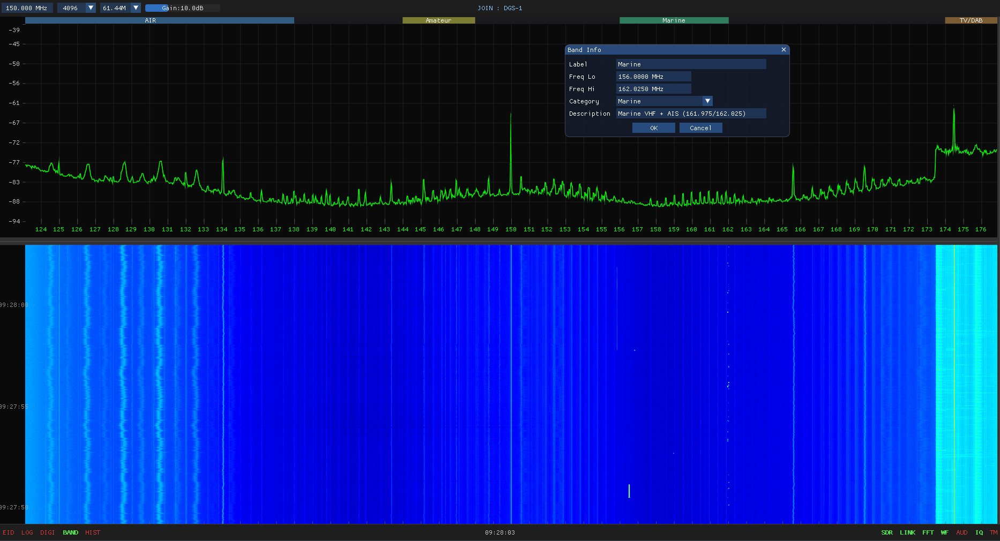
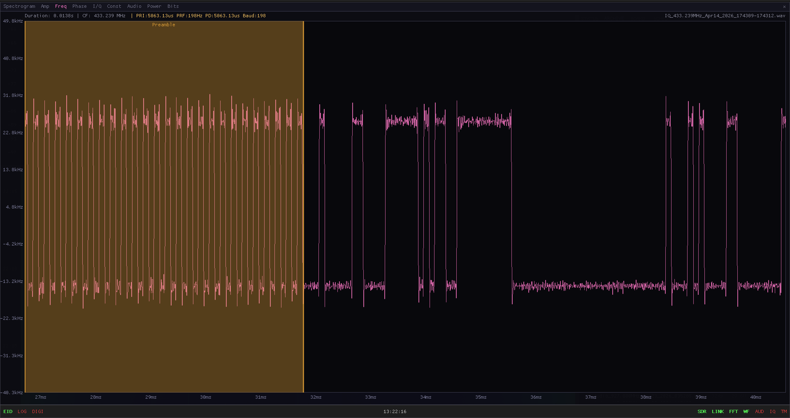
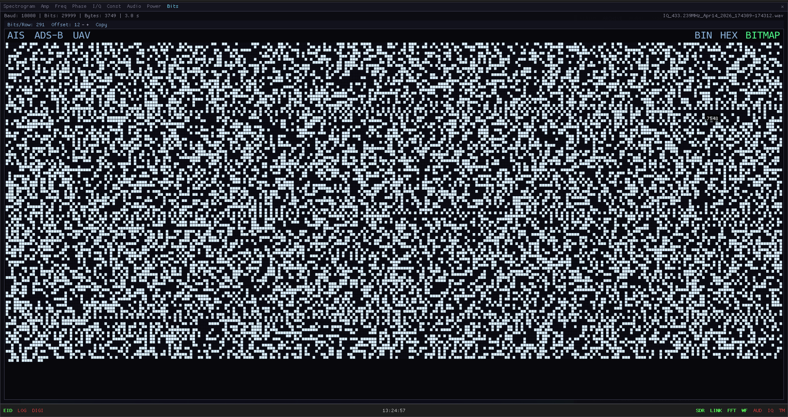
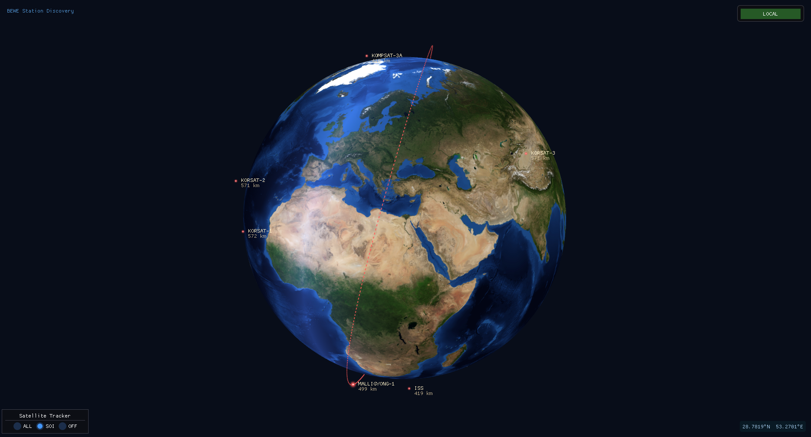
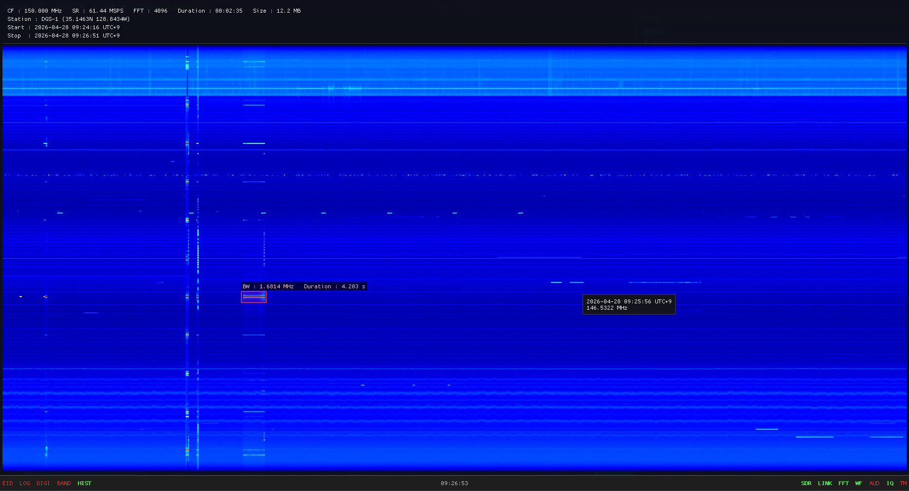

Behind Everyone We Hear Everything
A multi-site signals intelligence system for continuous wideband RF surveillance — persistent waterfall archive, cross-station emitter library, and forensic IQ workbench, all driven from a single operator workstation.
Receiver sites at multiple regional locations operate under a single workstation. Up to ten concurrent demodulator channels per site; AM, FM, AIS, ADS-B, and digital protocol auto-decode with no per-site configuration.
TLE-driven real-time tracking across LEO, MEO, and GEO bands — click a satellite to trace its full orbit. OpenSky ADS-B aircraft positions overlaid on the same globe for an integrated air-and-space picture.
Every spectrum row from every site committed to a permanent record. Scroll back hours, days, or months from any analyst workstation; mission-coded IQ and audio archives ready for offline forensic reanalysis.
우크라이나 전선에서 회수된 이란제 자폭드론. RF 제어링크를 포착·삼각측량해 요격 경로를 확보한 실전 사례.
DIA · Public Domain미군 TDEWS 훈련에서 주파수 도약(FH) 전술 통신을 분산 노드로 실시간 포착·역추적한 현장.
DVIDS · US Army · Public Domain현대 전장에서 GPS 교란과 전자전(EW)이 핵심 위협으로 부상. RF 탐지·삼각측량이 선제 대응의 열쇠.
Ukraine MoD · CC BY-SABehind Everyone We Hear Everything
광대역 · 다거점 · 영구 아카이브 신호정보 플랫폼
GPS 교란 · 무인기 침투 · 미사일 유도 · 전술 통신 — 현대 전장에서 무기보다 먼저 도달하는 것은 전파 신호입니다.
북한은 2010년 이후 서해 일대에 고출력 GPS 교란 전파를 반복 발사하고 있습니다. 단 한 차례의 교란으로 민항기 200여 대의 항법 장치가 오작동하며, 군 무인기의 귀환 경로 혼란으로 이어집니다.
2014년 파주, 2017년 성주, 2022년 서울 용산 상공 3km까지 침투한 북한 소형 무인기. 레이더가 포착하지 못하는 저고도·저속 기체는 RF 제어링크가 유일한 탐지 단서입니다.

이란 Shahed-136 — 우크라이나 전선 회수 실물. RF 제어링크 탐지로 요격 (DIA, Public Domain)탄도·순항미사일의 유도 체계(GPS 수신기, 능동 레이더 탐색기, 텔레메트리)는 발사 전부터 RF 신호를 방출합니다. 이를 포착하면 수십 초의 선행 경보 확보가 가능합니다.
북한군 HF·VHF·UHF 무전, 주파수 도약(FH) 디지털 데이터링크, 무인기 제어링크. 분산·상시 수집 없이는 신호 패턴과 적의 의도를 파악하기 어렵습니다.

미군 TDEWS 분산 SIGINT — FH 통신 실시간 포착 훈련 (DVIDS / US Army, Public Domain)미사일이 발사되기 전, 무인기가 국경을 넘기 전 —
전파 신호가 먼저 공간을 가득 채운다.
발사 전 탐색기 활성화, 이륙 전 제어링크 점검 — 무기가 움직이기 전에 RF 신호가 방출됩니다. 이를 포착하면 수십 초의 선행 경보 확보가 가능합니다.
한 곳의 감청소는 지형·거리·교란에 취약합니다. 다수 거점에서 동시 수집한 신호를 교차 검증하면 단일 센서로는 불가능한 위치 추적과 패턴 분석이 가능합니다.
단발 신호 하나는 잡음일 수 있습니다. 그러나 동일 주파수의 반복 패턴은 작전 의도의 징후입니다. 영구 기록 없이는 이 패턴을 식별할 수 없습니다.
전문 분석관 없이도 전방 기지에서 즉시 운용 가능해야 합니다. 전원 연결만으로 작동하는 무인 SIGINT 플랫폼을 목표로 합니다.
THAAD·패트리어트·현무 — 모두 공격이 시작된 뒤에 작동합니다. 아무리 뛰어난 방어 체계도 100% 요격은 불가능합니다.
전 세계 국가는 사전 탐지를 위해 세 가지 정보 체계를 운용합니다. BEWE는 그 중 신호정보(SIGINT)를 전담합니다.
첩보원·협력자를 통한 직접 수집. 깊은 맥락을 제공하지만 확보에 시간이 걸립니다.
위성·항공 영상으로 시설·장비·배치를 파악합니다. 날씨와 위성 재방문 주기에 제약이 있습니다.
전자기 신호를 수집·분석해 적의 능력과 의도를 실시간으로 파악합니다. 날씨·시간·가시성에 무관합니다.
백두·금강 정찰기, 777부대, 지상 고정 감청소 — 강력한 자산들이지만 구조적 공백이 존재합니다.
RC-800 계열 유인 신호정보 수집기. COMINT·ELINT 수집 능력 보유. 임무 비행 중에만 커버리지 확보 — 상시 운용 불가.
SAR·EO 영상 중심. RF 신호정보 수집 기능은 제한적. 재방문 주기가 존재해 실시간 감시에 한계.
전자정보 수집 전문 부대. 고정 위치 기반 운용. 접경 전선 전체를 동시 커버하는 분산 수집 체계 부재.
접경 지역 전략 거점 배치. 거점 간 데이터 연동(실시간 공유)이 제한적. 개인 분석관에 의존하는 지식 관리.
백두·금강이 비행하지 않는 시간대 — DMZ·NLL 상시 감청 공백.
3초 이내 단발 송출하는 FH 데이터링크·무인기 제어링크는 스캔 방식으로 수집 불가.
체계 간 실시간 크로스-스테이션 상관 없음. TDOA 위치 추정 불가.
고가 자산이 다루지 못하는 저고도·상시·분산 영역을 COTS 노드로 조밀하게 채웁니다.
백두 수집 데이터·지상 감청소·777 분석셀이 각각 독립 운용. 동일 이미터를 여러 체계가 별도로 분석하며, 실시간 크로스-스테이션 상관이 불가합니다.
유인 정찰기 1회 임무 운용 비용은 수억 원대. 소수의 고가 자산으로는 접경 전선 250km 전체를 24시간 커버하는 것이 구조적으로 불가합니다.
북한 FH·CDMA·burst 데이터링크는 수 초 이내 단발 송출 후 주파수를 이동합니다. 임무 중심의 스캔 방식으로는 이 신호를 구조적으로 놓칩니다.
이미터 식별 정보가 분석관 개인의 기억·메모에만 존재합니다. 전역·전보 시 100% 손실되며, 같은 주파수를 여러 체계가 각자 재학습하는 비효율이 반복됩니다.
전방 수집 노드(HOST) · C2 분석관(JOIN) · SIGINT 융합 서버(Central) — 3계층이 하나의 플랫폼으로 작동합니다.

레이더가 놓치는 저고도 소형 무인기 — RF 제어링크와 FPV 다운링크가 유일한 탐지 단서입니다.
상용 무인기 제어 프로토콜(DJI Ocusync·FPV·FHSS)을 PRI·변조 분석으로 기종별 핑거프린트 식별. 알 수 없는 패턴은 자동으로 분석 대기열에 추가.
3개 이상의 전방 노드가 동일 신호를 수신한 시간 차이로 발신원 위치를 삼각측량. 레이더 없이 저고도 무인기의 좌표를 산출합니다.
수 초짜리 단발 제어 신호도 롤링 IQ 버퍼에 포착. 사후 재분석과 증거 보전이 가능합니다.

HF · VHF · UHF 10채널 동시 복조 — 적성 통신이 어느 주파수로 이동해도 Holding List가 추적을 유지합니다.
AM · FM · USB · LSB · CW 복조 채널 10개를 병렬 운용. 분석관이 다른 채널로 이동해도 Holding List가 스켈치 타이머를 유지하다가 재활성 시 자동 복귀합니다.
북한군 주파수 할당·무인기 제어 대역·위성 다운링크 대역을 카테고리·색상으로 정의해 두면, 모든 JOIN 분석관 화면에 즉시 동기화됩니다.
60초 롤링 IQ 버퍼 덕분에 FH로 순식간에 이동한 신호도 사후에 재생·분석이 가능합니다. 기존 스캔 방식의 구조적 공백을 해소합니다.

레이더·미사일 탐색기·텔레메트리 신호 — 9개 분석 도메인으로 파라미터를 자동 산출합니다.


단일 수신 지점으로는 교란 범위를 가늠할 수 없습니다. 분산 노드만이 실시간 삼각측량을 가능하게 합니다.
GPS L1/L2(1.2·1.5 GHz), GLONASS, BeiDou, Galileo 대역을 상시 수신. 교란 신호 등장 즉시 경보 발령.
3개 이상 노드가 교란 신호를 수신한 시각 차이로 북한 교란 송신기 위치를 삼각측량. 기존 단일 감청소로는 불가능한 기능입니다.
교란 신호를 IQ 파일로 자동 저장. 사후 신호 특성 분석과 국제 기구 신고용 증거 자료로 활용합니다.
노드별 수신 강도를 Globe에 표시해 교란 영향권을 지도 위에 실시간으로 가시화합니다.

중국·러시아·북한 ISR 위성이 한반도 상공을 지나는 매 순간 — 자동으로 신호를 포착하고 기록합니다.
Celestrak TLE 카탈로그 자동 동기화. 중국·러시아 ISR 위성과 북한 만리경의 한반도 통과 시간을 사전 예측해 수집 일정을 자동 편성합니다.
미션 코드 기반으로 위성 패스마다 IQ 파일을 자동 생성·저장. 수집된 신호는 도플러 보정 후 변조 분석이 가능합니다.
복수 지점에서 수신한 도플러 곡선을 비교해 위성 용도(통신·ISR·GNSS 재밍)를 식별합니다.
북한이 GPS 교란 전파를 발사하는 순간부터 합참 통보까지 — BEWE가 2분 안에 처리합니다.
전방 HOST가 송출하는 라이브 스펙트럼을 분석관이 어디서든 실시간으로 관제합니다.
수집된 신호를 9개 도메인으로 즉시 분석 — 변조 식별부터 비트 역분석까지 한 화면에서.
전방 노드 위치와 적성 위성 궤도를 한 화면에 — 분석관 한 명이 전 구역을 동시에 관제합니다.
각 HOST가 위·경도와 운용 상태를 Central로 송출 → Globe 마커 자동 갱신. 클릭 한 번으로 해당 스테이션 스펙트럼에 즉시 접속.
TLE 자동 갱신으로 중국·러시아·북한 ISR 위성의 한반도 통과 예정 경로를 전방 노드 위치와 함께 표시.
Globe를 작전 지도로 두고, 각 전방 노드를 별도 창으로 분리해 DMZ·NLL·해안 전 구역을 1인이 동시에 감시.
분석관 한 명의 발견이 전 체계의 자산으로 축적됩니다. 이미터 식별 DB는 미션이 누적될수록 확장됩니다.

미션 코드(예: A03 = 1월 3일) 기반으로 IQ · Audio · HIST 파일을 Central에 자동 집중 관리. 임무 단위 사후 재분석이 가능합니다.
주파수·Tags(MMSI·Callsign·단위 식별자)로 이미터를 자동 매칭. 새로운 미식별 신호는 분석관 확인 대기열에 추가.
최초 · 최근 수신 시각, 기여 스테이션, 분석관 메모가 하나의 레코드에 누적됩니다. 전역 · 전보 없이도 조직 지식이 영구 보존됩니다.
RPi5 + 상용 SDR — 수백만 원대 COTS 부품으로 구성되며, 전방 기지 어디에나 즉시 배치 가능한 무인 SIGINT 수집 노드입니다.
| SDR | 수신 주파수 | 게인 | 주요 운용 용도 |
|---|---|---|---|
| BladeRF xA4/xA9 | 47 MHz – 6 GHz | 0 – 60 dB | 광대역 수집 · 무인기 · 위성 다운링크 |
| ADALM-Pluto | 70 MHz – 6 GHz | 0 – 71 dB | VHF/UHF 전술 통신 · C-UAS |
| RTL-SDR v4 | 500 kHz – 1.766 GHz | 0 – 49.6 dB | HF 감청 · GPS 대역 모니터링 |
단가 · 배치 속도 · 협업 · 아카이브 — 네 가지 핵심 축에서 구조적 우위를 보입니다.
| 비교 항목 | BEWE (COTS) | L3Harris / BAE | 전용 지상 체계 |
|---|---|---|---|
| 노드 단가 | 수백만 원 RPi5 + BladeRF |
수억 ~ 수십억 원 | 수십억 ~ 수백억 원 |
| 전방 배치 소요 시간 | 수 시간 이내 | 수 주 ~ 수 개월 | 수 개월 ~ 수 년 |
| 다수 분석관 실시간 협업 | 기본 내장 JOIN 무제한 |
별도 C2 시스템 필요 | 미지원 |
| IQ 영구 아카이브 | 미션 단위 자동 | 옵션 (추가 비용) | 제한적 |
| 수신기 확장성 | 완전 개방 SDR 자유 교체 |
독점 하드웨어 | 독점 플랫폼 |
| 최소 운용 인원 | 1인 관제 가능 | 전담팀 필요 | 전담팀 필요 |
네트워크 격리 · 인증 · 데이터 분류 · 감사 추적 — 방위사업청 보안 요구사항을 설계 단계부터 내장합니다.
도입 및 협력 문의 — bewe.co.kr